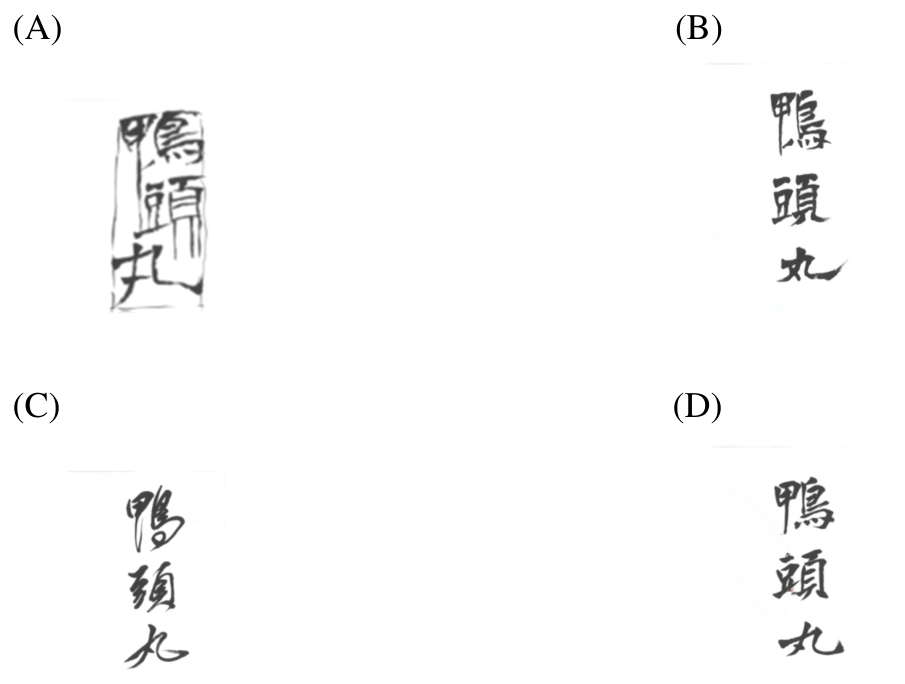

113 年教師檢定特教資優・國語文能力測驗試題與答案
這一頁是民國 113 年教師檢定特教資優・國語文能力測驗的整份歷屆試題，共 25 題，題目與標準答案出自教育部教師資格考試歷屆試題（受託國立臺灣師範大學心理與教育測驗研究發展中心），其中 25 題附有詳解。以下逐題列出題幹、選項與答案；要計時作答或記錄成績，請用線上練習。
教育部原始場次代碼：tqa11322
線上作答這一科 →
全部 25 題
第 1 題
本文中提到的「鴨頭丸」是指以下何者？
- （A）毛筆
- （B）硯台
- （C）中藥
- （D）菜餚
答案：（C）
詳解與考點
正解：本文引王獻之〈鴨頭丸帖〉全文「鴨頭丸，故不佳。明當必集，當與君相見。」為書信體例，內容是王獻之向友人告知服藥心得。文中明白指出「根據《本草綱目》的記載，鴨頭丸可治療水腫、煩躁等症狀」，可知「鴨頭丸」是一種中藥方劑，「故不佳」意指這帖藥服後效果不理想，故選（C）。
A、B：（A）毛筆、（B）硯台都是書法創作的文房用具聯想──由於〈鴨頭丸帖〉本身是一幅書法墨跡，容易讓人望「帖」生義，以為帖中談的是寫字用具，但文中明確在敘述服藥的心得與相聚的約定，與筆硯等文房器物無關。
D：（D）菜餚是望文生義的誤讀，把「鴨頭丸」拆解成「鴨頭」加「丸」，聯想成以鴨頭製成的丸狀菜餚；但依《本草綱目》的記載與信中「故不佳」的服藥語氣，可知這是藥效欠佳的藥方，並非食物。
本題考點：文言書信（帖）的內容判讀與詞語指涉。「帖」為書信、詩文等手書墨蹟，解讀時須扣合文中直接給出的線索（如引用典籍的說明語句），避免望文生義；本題須從「根據《本草綱目》」一句準確定位「鴨頭丸」的指涉範疇。
第 2 題
根據本文描述，帖的內容與用途多為下列何者？
- （A）內容：宦遊經歷；用途：朝廷奏啟
- （B）內容：生活瑣事；用途：書信往來
- （C）內容：議政觀點；用途：論說策略
- （D）內容：頌揚德行；用途：墓誌碑銘
答案：（B）
詳解與考點
正解：本文引歐陽脩對法帖性質的界定：「其事率皆弔哀、候病、敘睽離、通訊問。施於家人朋友之間，不過數行而已」，說明帖的內容多是弔唁、問候疾病、傾訴離別、互通消息等生活瑣事，用途是親友家人間的書信往來。文中舉王獻之〈鴨頭丸帖〉為例，全文僅「鴨頭丸，故不佳。明當必集，當與君相見」數語，談的正是服藥感受與約見安排，題材貼近生活、內容直白，可見帖的內容屬生活瑣事，用途為書信往來，對應選項（B）。
A：「宦遊經歷、朝廷奏啟」偏向官員陳述仕宦經歷、呈給朝廷的公文性質，但本文所述帖的內容是家人朋友間的私人問候瑣事，並非呈報朝廷的官方文書，與本文描述不符。
C：「議政觀點、論說策略」指涉政論性文章，著重議論政事、闡述策略，但本文舉例的〈鴨頭丸帖〉僅是詢問服藥心得與約定會面，全無議論政事的內容，與帖的實際性質不合。
D：「頌揚德行、墓誌碑銘」屬悼念性質的碑刻文體，用於歌頌死者生平德行、鐫刻於墓碑，但帖是生者之間往來的日常書信，性質與用途皆與墓誌碑銘不同。
本題考點：「帖」作為書法文類的性質辨識。帖是紙帛上書寫的書信、詩文等手書墨蹟，內容多為生活瑣事（弔唁、問候、敘別、通訊），用途是親友家人間的私人書信往來，有別於奏啟、論說、碑銘等公開或正式文體；解題須緊扣文中歐陽脩對法帖性質的界定與〈鴨頭丸帖〉實例。
第 3 題
根據本文的描述, 請判斷下列何者的書寫風格與〈鴨頭丸帖〉最符合?

本題選項為上圖中的 A／B／C／D，請對照圖片作答。
答案：（C）
詳解與考點
正解：本文描述王獻之〈鴨頭丸帖〉的書寫風格為「筆意連貫，一氣呵成，字體流暢妍美」，並引董其昌評語「極草縱之致」，可知其風格特徵是筆畫牽絲映帶、通篇連綿貫串、恣意奔放的草書。四個選項為「鴨頭丸」三字的不同書寫版本，本題應依此一「連綿貫串、極草縱之致」的判準逐一檢視。答案C所呈現的書寫方式最能體現筆畫連綿牽引、一氣呵成的草書特質，與文中對〈鴨頭丸帖〉風格的描述相符，故選C。
A、B、D：三個選項所呈現的書寫方式，皆未能展現本文所述牽絲映帶、通篇連綿的草書特徵，其連貫程度與奔放程度不足以呼應「極草縱之致」的評語，故與〈鴨頭丸帖〉的書寫風格不符。
本題考點：草書「連綿映帶」的辨識與書體風格的文圖對應能力。解題步驟是先從文本擷取關鍵風格描述（筆意連貫、極草縱之致），再以此判準檢視圖像選項何者最符合連綿貫串、恣意奔放的草書特質；本題涉及圖像比對，須以文字描述的風格判準為依歸作答。
第 4 題
下列哪一種關於書法的評述,最接近作者在文中最後一段所欲表達的觀點?
- （A）義之書字勢雄逸,歷代寶之,永以為訓
- （B）獻之善隸書,骨勢不及父,而媚趣過之
- （C）皇頡作文,因物構思;觀彼鳥跡,遂成文字
- （D）逸筆餘興,淋漓揮灑,或妍或醜,百態橫生
答案：（D）
詳解與考點
正解：文末段作者總結全文旨趣，指出傳世法帖未必是刻意雕琢的鉅作，往往只是日常書寫的自然流露，「無論他人覺得好不好看，創作都是一種展現自我的方式」，重點落在書寫不拘工拙、隨興揮灑即是美感體驗本身。選項（D）「逸筆餘興，淋漓揮灑，或妍或醜，百態橫生」正是形容率性書寫時筆墨隨興流動、不論美醜皆各具姿態的特質，與作者末段「不論好看與否，書寫本身就是自我展現」的觀點高度呼應，故選（D）。
A：「羲之書字勢雄逸，歷代寶之，永以為訓」是對王羲之書法成就的具體歷史評價，性質偏向文中援引前人推崇特定書家的讚語，而非全文總結性的整體書寫美學觀點，與末段強調「隨興書寫即是美」的旨趣不同。
B：「獻之善隸書，骨勢不及父，而媚趣過之」是就王獻之、王羲之父子書風優劣所做的比較性評論，屬於針對特定書家風格的品評語句，同樣未觸及末段所欲表達「書寫是自我展現，不論工拙」的核心觀點。
C：「皇頡作文，因物構思；觀彼鳥跡，遂成文字」講的是倉頡觀鳥跡造字的文字起源傳說，性質適合用於文章開篇追溯文字或書法的緣起，與文末總結書寫美學、呼應個人日常書寫經驗的段落脈絡不符。
本題考點：文意理解與段落主旨呼應判讀。作答關鍵在先掌握末段「藝術與美感就在生活體驗之中」「創作是自我展現」的總結性論點，再從四個選項中辨別何者屬於全文式的美學總結，何者只是文中援引的個別評價或起源敘述。
第 5 題
根據文章敘述, 瓦剌來襲, 明代朝廷內發生了什麼事?
- （A）吏部尚書力排眾議, 鼓勵皇帝親征
- （B）眾將領擁皇帝親征, 官員倉促逃亡
- （C）皇帝貼身太監被殺, 憤而決定親征
- （D）皇帝勿促決定親征, 大臣反對無效
答案：（D）
詳解與考點
正解：文中史料記載，瓦剌也先大舉入侵，太監王振勸明英宗親征，「命下，二日即行，事出倉卒，舉朝震駭」，顯示皇帝在極短時間內倉促決定御駕親征；而「吏部尚書王直及大小群臣，伏關懇留，不允」，說明以吏部尚書王直為首的大小官員曾伏於宮門力勸皇帝留下，但皇帝並未採納，親征之議照樣定案。這正是皇帝倉促決定親征、大臣極力反對卻無法阻止的過程，故選（D）。
A：文中吏部尚書王直是率領群臣「伏關懇留」勸阻皇帝親征的一方，敘述與選項A「吏部尚書力排眾議、鼓勵皇帝親征」的角色恰好相反，屬張冠李戴。
B：文中並無「眾將領擁戴皇帝親征」的記載，慫恿親征的是太監王振而非將領；文中也沒有官員在親征決定過程中倉促逃亡的敘述，選項B缺乏文本依據。
C：文中護衛將軍樊忠殺死太監王振一事，發生在「師潰於土木」、明英宗親征戰敗被俘（帝北狩）之後，是親征失利之後的結果，並非親征決定的起因；選項C將此事時序顛倒，誤植為皇帝決定親征之前發生。
本題考點：文言（改寫）史料的敘事時序判讀。作答關鍵在於依文本先後順序，釐清事件的因果與時間關係（王振勸親征→倉促下令→群臣勸阻不成→親征戰敗→王振被部將所殺），避免因人物角色（王直、樊忠等）或事件先後被題目選項調換而誤判。
第 6 題
文中所說的「先生」指的是誰?
- （A）將軍樊忠
- （B）太監王振
- （C）尚書王直
- （D）皇帝英宗
答案：（B）
詳解與考點
正解：本文以AI模擬英宗獨白呈現多段史料。第一段獨白中英宗說「先生鼓勵朕御駕親征，有五十萬大軍及眾將領護駕，朕怕什麼？」對照同段引用的《明史紀事本末》原文「太監王振勸上親征」，可知鼓勵英宗親征者正是太監王振；後文英宗又說「先生屍骨未寒，他們就急著抄先生的家」「先生隨朕親征，他懂得我的用心，是忠臣啊」，皆與王振被誅殺、家產被抄沒的史實吻合，故「先生」指的是太監王振，選B。
A：樊忠是土木之變戰敗後，以手中鐵鎚擊殺王振、口稱「吾為天下誅此賊」之護衛將軍，是誅殺「先生」之人，而非被稱為「先生」的對象。
C：王直是力諫英宗勿親征、「伏關懇留」的吏部尚書，英宗獨白中直呼其名並帶有不滿之意（「王直他們實在是太懦弱了」），立場與備受英宗尊稱、倚重的「先生」恰恰相反。
D：英宗本人是說出「先生」一詞、對「先生」表達尊敬與思念的獨白主體，而非被稱呼為「先生」的對象，主詞與稱謂對象不可混淆。
本題考點：文言史料人物指稱的判讀。作答關鍵在於將題幹AI獨白中的稱謂（「先生」）與同段引用的正史原文（《明史紀事本末》）相互對照，找出前後文中人物身分與事件的一致性線索（王振勸親征、被誅、被抄家、後獲平反等），逐一比對排除其餘人物。
第 7 題
史書用「帝北狩」一詞描述英宗此次事件, 這種寫作筆法與下列哪個選項「」中語詞最接近?
- （A）由於戰事「告急」, 許多年輕學子也被徵召入伍
- （B）逆賊攻勢猛烈, 我軍倉皇應變, 向後方「轉進」
- （C）我軍因糧草不濟, 堅守十餘天後仍然「敗北」
- （D）歷經兩日的「折衝」, 雙方同時宣布交換戰俘
答案：（B）
詳解與考點
正解：「帝北狩」字面指皇帝到北方巡狩，實際上是以委婉、隱晦的說法粉飾「皇帝被俘虜」這樣難堪的史實，此為史家「為尊者諱」、以褒飾貶的春秋筆法。選項（B）「轉進」表面上指主動、有計畫地向後方推進，實際上卻是用來掩飾「軍隊潰敗、倉皇撤退」的窘迫處境，同樣是以正面、中性甚至帶有主動意味的詞彙，包裝負面、難堪的事實，修辭策略與「帝北狩」最為近似，故選（B）。
A：「告急」如實描述戰事情勢危急緊迫，是對客觀狀況的直接陳述，並未將任何負面或難堪的結果加以美化、粉飾，與「帝北狩」刻意迴避難堪真相的筆法不同。
C：「敗北」一詞直接、明白地承認戰敗的事實，用詞本身即帶有負面、坦率的意涵，並無任何委婉迴避或美化包裝的修辭效果，與「帝北狩」欲隱藏真相的筆法方向相反。
D：「折衝」指雙方在外交談判上的周旋往來，屬於中性、客觀描述談判過程的詞彙，本身不涉及對某項負面事實（如戰敗、被俘）的掩飾或美化，與題幹筆法所欲達成的迴避效果無關。
本題考點：委婉語與春秋筆法（historiographical euphemism）的修辭辨識。史家常以正面、中性甚至帶主動意味的詞彙包裝負面事實（如「北狩」代替「被俘」、「轉進」代替「潰敗撤退」），判讀關鍵在於找出「表面詞義」與「實際所指的難堪事實」之間的落差，並比對選項中「」內詞語是否也具備相同以褒飾貶、迴避真相的修辭功能。
第 8 題
比較各選項的前後句, 哪一組中皇帝與臣子對「先生」的看法是相反的?
- （A）金銀十餘庫, 馬萬餘匹, 皆沒官/索金幣, 約賂至即歸上
- （B）太監王振勸上親征/吏部尚書王直及大小群臣, 伏闕懇留
- （C）祀智化寺, 贈額曰旌忠/遙尊上為太上皇, 詔赦天下
- （D）思振, 諱為忠所殺, 詔復振官/吾為天下誅此賊
答案：（D）
詳解與考點
正解：選項D前句「思振，諱為忠所殺，詔復振官」出自英宗復辟後，呈現皇帝對「先生」王振念念不忘、甚至下詔恢復其官位的眷戀之情；後句「吾為天下誅此賊」出自誅殺王振的護衛將軍樊忠之口，直斥其為「賊」。兩相對照，一方是皇帝對王振的懷念與平反，一方是臣子（樊忠）視王振為天下之賊而誅之，恰好呈現皇帝與臣子對同一人物截然相反的評價，故選D。
A：前句「金銀十餘庫，馬萬餘匹，皆沒官」是敘述查抄王振家產的客觀陳述，後句「索金幣，約賂至即歸上」則是敵方也先索討贖金的行動，兩句都非直接表達皇帝或臣子對「先生」（王振）的評價，故不涉及對先生看法相反與否的比較。
B：前句「太監王振勸上親征」是王振本人的行動陳述，後句「吏部尚書王直及大小群臣，伏闕懇留」是群臣對「是否親征」此一決策的意見表態，兩句呈現的是對「親征決策」的立場分歧，而非直接針對「先生」王振本身的評價對比，故不選B。
C：前句「祀智化寺，贈額曰旌忠」確實是皇帝對王振的正面追封，然而後句「遙尊上為太上皇，詔赦天下」的主詞是英宗本人被尊為太上皇，並非臣子對「先生」王振的評價，兩句對比的主體不一致，故不選C。
本題考點：文言篇章中人物立場的前後句對比判讀。此類題型須先辨明每句話的敘述主體與評價對象，確認前後兩句是否確實針對同一人物（此處為王振，即「先生」）表態，再比對雙方評價方向是否相反；若兩句評價對象不一致，即不構成有效對比。
第 9 題
文章最後, 皇帝獨白說要為先生平反, 是為了什麼原因?
- （A）為先生成為戰敗的代罪羔羊感到委屈
- （B）不捨先生戰敗後歸國卻慘遭抄家命運
- （C）想以皇帝身分擔保先生沒有通敵賣國
- （D）感念有先生的幫助才能再度登上皇位
答案：（A）
詳解與考點
正解：綜合各段獨白脈絡可知，土木堡兵敗後，護衛將軍樊忠當場以「吾為天下誅此賊」之語手刃王振，隨即又有人奉令抄沒王振家產，等於將這場軍事潰敗的責任全數歸咎於王振一人；而皇帝獨白中屢次為王振辯護（「先生隨朕親征，他懂得我的用心，是忠臣啊」），可見他認為王振實際上是被當成戰敗代罪羔羊、蒙受不白之冤。故末段「時常想為先生平反」，正是為此感到委屈、欲還其清白，答案為（A）。
B：此選項稱王振「戰敗後歸國卻遭抄家」，但依文中「護衛將軍樊忠者，從帝旁以所持捶捶死振」可知王振是在土木堡兵敗當下便遭樊忠擊殺身亡，並未隨皇帝歸國，此選項在時序與情節上與原文不符。
C：文中並無任何段落指控或懷疑王振通敵賣國，皇帝獨白反覆強調的是王振遭誤解、蒙受戰敗罪責，而非有人指控其通敵，故「擔保沒有通敵」缺乏文本依據，屬憑空設想的誘答。
D：王振歿於土木堡之役，時間點早於皇帝其後成為太上皇、乃至天順元年復辟之事，文中並未提及王振曾協助皇帝復位；依史實與文中時序，助其復辟者另有其人，與王振無關，此選項在因果與時序上皆與原文牴觸。
本題考點：題組閱讀須綜合全篇脈絡推斷人物心理動機。判讀「平反」一詞的具體原因，須留意文中「代罪」（遭樊忠當場擊殺、家產被抄沒）與「辯護」（皇帝反覆強調王振忠心、懂朕用心）兩條線索的呼應關係，並核對事件發生的先後順序，避免被似是而非、時序錯置的選項誤導。
第 10 題
阿明將史書記載與皇帝的獨白並列編排, 呈現出什麼效果?
- （A）以時空交錯凸顯戰後的物是人非
- （B）歷史事件可以用不同的視角解讀
- （C）新科技可以澄清史書記載的錯誤
- （D）讓英明君主援引史實替忠臣翻案
答案：（B）
詳解與考點
正解：阿明利用AI技術，將《明史紀事本末》等史書的客觀記載，與虛構模擬的明英宗第一人稱獨白並列呈現，一方是史家撰寫的客觀敘事視角，另一方是虛構想像的當事人主觀內心獨白視角，兩相對照讓讀者看見同一段歷史事件可以有截然不同的解讀角度與情感詮釋，故選B。
A：時空交錯凸顯戰後的物是人非偏重於懷舊、滄桑氛圍的營造，但文中並置史書與獨白的用意在於呈現客觀記載與主觀心境兩種不同視角的對照，並非聚焦於戰後景物人事變遷的感傷氛圍。
C：文中僅提及阿明透過AI技術模擬了英宗的獨白，AI在此僅是生成虛構獨白的工具，並未用於考證或澄清史書記載的錯誤；史書引文本身在文中始終被引用而未被質疑或更正，此選項於文本中缺乏依據。
D：獨白內容呈現的是虛構想像的英宗個人主觀情感與立場，屬於個人化的內心自白，並非英宗本人援引史實進行客觀考證式的翻案論述，且史書原文本身已明白記載天順元年為王振平反一事，並非透過獨白翻案而成。
本題考點：多重敘事視角並置的修辭效果。將客觀史料與主觀獨白並列編排，可使讀者同時接觸發生了什麼與當事人如何感受、詮釋兩個層次，藉此凸顯同一歷史事件存在多元解讀空間，是歷史普及寫作或創作常見的敘事手法。
第 11 題
下列何者較符合文中所描述的「錯失恐懼症」？
- （A）意欲尋覓知音的迫切感
- （B）無法管理時間的挫敗感
- （C）害怕被他人遺忘的焦慮感
- （D）產生與他人接觸的恐懼感
答案：（C）
詳解與考點
正解：文中定義「錯失恐懼症」（Fear of Missing Out, FOMO）的情境是：因沒有跟上他人動態、沒能參與貼文中的聚會而感到「悵然若失」，並焦慮地等待他人的關注與迴響。其核心是害怕自己被排除在他人的生活與社交圈之外、擔心因此被忽略或遺忘，故C「害怕被他人遺忘的焦慮感」最符合文意，選C。
A：「意欲尋覓知音的迫切感」偏向渴望被深刻理解、產生共鳴的心理需求，而文中描述的焦慮源自「跟不上」與「被排除」，並非渴望知音，兩者情感訴求不同。
B：「無法管理時間的挫敗感」談的是時間規劃能力不足所致的挫折，屬於另一類心理困擾，文中並未提及時間管理的議題，與錯失恐懼症的定義無關。
D：「與他人接觸的恐懼感」描述的是社交逃避、害怕互動的傾向，恰與文中所述「渴望參與、深怕被排除在外」的心態相反——錯失恐懼症的人是害怕脫離人群，而非害怕與人接觸。
本題考點：錯失恐懼症（FOMO）的心理定義。FOMO指因擔憂錯過他人正在經歷的美好經驗或社交活動而產生的持續性焦慮，核心是「被排除在外」的恐懼，而非知音難覓、時間管理或社交恐懼等其他心理狀態，作答時應緊扣文中具體描述的情緒來源加以比對。
第 12 題
作者在引用《論語》一段揭示了社群網站的什麼負面現象？
- （A）跟風的網路現象,缺乏自我思考
- （B）快速交友的流程,致使友誼淡薄
- （C）強迫公開生活,因此無法有個人隱私
- （D）營造虛假自我,卻又期待被他人理解
答案：（D）
詳解與考點
正解：作者引用《論語》「人不知而不慍」對比出現代人在社群網站上經營形象卻仍渴求他人理解的矛盾：一方面苦心在社群中營造出與自我截然不同的面目，透過修飾美化呈現不真實的自己；一方面又深切期盼被他人看懂、認同，兩者互相牴觸，此即選項D「營造虛假自我，卻又期待被他人理解」，故選D。
A：跟風的網路現象、缺乏自我思考，談的是盲從風潮、隨波逐流的問題，與文中藉《論語》「知╱不知」對比出的「自我形象真假」與「渴望被理解」的矛盾主題無關，故不選A。
B：快速交友的流程、致使友誼淡薄，談的是交友速度與情誼品質的落差，文中確有提及「毫秒之間便可完成」的交友速度，但《論語》引文所要揭示的重點在於自我形象的真偽，而非交友速度本身，故不選B。
C：強迫公開生活、因此無法有個人隱私，談的是隱私被迫曝光的問題，文中雖提及「大量資訊都會直接塞進你腦海中」，但《論語》引文對比出的核心矛盾在於「虛假自我」與「渴望被理解」，並未觸及隱私被迫公開的議題，故不選C。
本題考點：引用典籍以凸顯論述矛盾的寫作手法。作者藉《論語》「人不知而不慍」原本強調的君子修養，反襯現代人在社群媒體上一方面刻意營造與真實自我不符的形象、一方面又渴望被他人理解與認同的矛盾心態；解題須扣緊「虛假自我」與「渴望理解」兩者的對立關係，而非泛論社群媒體的其他負面現象。
第 13 題
下列哪項情境,最符合作者想批判的網路人際關係現象?
- （A）因演算法只看到同溫層言論
- （B）追隨名人價值觀與消費行為
- （C）網路留言容易偏離貼文原意
- （D）想要透過修圖相片尋找真愛
答案：（D）
詳解與考點
正解：本文批判的核心，是部分人「苦心在社群中營造出與自我截然不同的面目，以此享受著以往未曾感受過的關注度，也期待著將流量轉化為真實的情誼」──也就是以美化、虛假的自我形象去博取關注，卻妄想這份建立在假象上的關注能昇華為真正的情誼。（D）「想要透過修圖相片尋找真愛」正是把經過美化修飾、失真的自我形象，拿去追求他人真心理解與愛慕，最具體地呈現了營造虛假自我卻期待被真心理解的矛盾情境，故選（D）。
A：（A）「因演算法只看到同溫層言論」談的是資訊接收管道被演算法侷限、只看見立場相近言論的現象，屬於資訊繭房效應的議題，與本文聚焦的營造虛假自我形象以博取關注並非同一批判對象。
B：（B）「追隨名人價值觀與消費行為」談的是從眾心理，跟隨名人品味進行消費或認同其價值觀，屬粉絲效應與消費從眾的現象，同樣未觸及自我形象是否真實這一核心議題。
C：（C）「網路留言容易偏離貼文原意」談的是網路討論串失焦、留言離題的現象，屬於網路溝通品質的問題，與塑造虛假自我形象以追求關注、情誼的批判主軸無關。
本題考點：社群媒體中自我形象經營與錯失恐懼症的現象批判。文中透過對比孔子「人不知而不慍」的坦然，反襯現代人透過失真形象追逐關注與情誼的矛盾心態，作答須扣緊虛假形象與真實情誼之間的落差進行判讀，而非泛指網路資訊或討論品質的其他問題。
第 14 題
作者認為孔子「人不知而不慍」一語，可為現代人提供什麼解方？
- （A）擴大舒適圈，適應生活變動
- （B）離開同溫層，接受他人想法
- （C）強化自我價值，無須憂慮不被他人理解
- （D）優化自身能力，以此成功獲得別人尊重
答案：（C）
詳解與考點
正解：本題出自題組，須先掌握本文脈絡：作者描寫社群時代人們汲汲於流量、按讚數，因害怕不被看見、不被理解而焦慮，甚至衍生「錯失恐懼症」。作者引孔子「人不知而不慍，不亦君子乎」，指出即使不被他人理解也不必心生怨懟，這正是為活在網路眾聲喧嘩中卻感孤獨的現代人，提供一種向內建立穩固自我價值、不必仰賴他人眼光肯定的解方，故選C。
A：擴大舒適圈以適應生活變動，談的是面對環境改變的適應能力，與「不被理解也不怨懟」所指向的自我價值穩固無關，本文並未討論適應變動的主題。
B：離開同溫層、接受他人想法，談的是對異見的接納，處理的是「如何面對與己不同的觀點」；而「不慍」談的是「面對不被理解時的心境」，兩者問題意識不同，本文通篇聚焦的是後者。
D：優化自身能力以獲得他人尊重，仍是以「他人肯定」作為行動目標，邏輯上與「人不知而不慍」所主張的不假外求恰好相反——本文正是要提醒現代人不必透過經營形象換取關注，優化能力求尊重仍落入向外尋求認同的框架。
本題考點：文言語句在題組本文脈絡中的引申義判讀。「人不知而不慍」出自《論語・學而》，字面指不被人理解也不生氣；解題須扣合本文對社群時代「錯失恐懼症」與外求關注現象的批判，將此語讀成建立內在自我價值、不假外求的處世態度。
第 15 題
文章最後一段，主要在描述網路世界的什麼現象？
- （A）虛擬世界交友容易，知己難求
- （B）交友軟體平臺眾多，不易抉擇
- （C）動態訊息限時閱覽，稍縱即逝
- （D）意見眾多紛亂龐雜，獨自退群
答案：（A）
詳解與考點
正解：文章末段以安迪‧沃荷「未來每個人都有十五分鐘成名機會」的預言，呼應社群網站興起後人人皆可輕易被看見、被連結的現象；但緊接著指出過度要求他人的關愛與注目，卻也讓現代人陷入眾聲喧嘩的社交孤獨之中，即便交友、被關注變得唾手可得，人與人之間真正深刻的理解與知己情誼卻依然難尋，呼應全文開頭「交友這件事於毫秒之間便可完成」所鋪陳的連結容易、理解困難之對比，故末段主旨應為（A）虛擬世界交友容易，知己難求。
B：（B）交友軟體平臺眾多、不易抉擇，聚焦在平臺選擇的實務困擾，末段內容並未討論平臺數量或選擇問題，與文意不符。
C：（C）動態訊息限時閱覽、稍縱即逝，談的是特定功能的時效性設計，末段並未涉及此一功能性議題。
D：（D）意見眾多紛亂龐雜、獨自退群，談的是社群意見過多導致成員選擇退出群組，末段主旨是連結容易但理解、知己難求的孤獨感，並非因意見紛雜而退群，方向不同。
本題考點：文章段落主旨的歸納與呼應關係判讀。解題須掌握全文一貫的核心對比（社群連結的便利與深刻理解、知己的匱乏），並辨識末段引用名人語句僅是烘托論點的例證，而非段落主旨本身。
第 16 題
文章中，閩國的王延稟被迫封為神，最有可能的原因為何？
- （A）感念與傳承忠義的精神
- （B）為平撫君王心中的不安
- （C）鞏固地方勢力和穩定局勢
- （D）延續地方傳統與文化象徵
答案：（C）
詳解與考點
正解：文中明確指出，閩國的王延稟起兵叛變被殺後，君王「為了撫慰地方吏民，維持安定，仍為其建廟祭祀」。王延稟原有其地方勢力與擁護者，君王雖將其視為叛逆而誅殺，卻仍願意將其封神立廟，正是要藉由撫平其舊部與地方吏民的不滿情緒，避免因誅殺引發地方動盪，藉神格化身分安撫民心、鞏固地方勢力與局勢的穩定，故選C。
A：「感念與傳承忠義精神」是主動、正面追思忠臣義士的動機，例如文中沈葆楨為鄭成功奏請建祠即屬此類；但王延稟身分是叛逆之臣，君王對其封神是出於不得不的安撫考量，而非感念其忠義，性質與動機均不相符。
B：「為平撫君王心中的不安」僅著眼於統治者個人的心理層面，忽略了文中明確點出的對象是地方吏民而非君王自身；封神安撫的對象是可能因誅殺而動搖的地方民心，而非君王一人的心理狀態，故此選項偏離文中敘述的重點。
D：「延續地方傳統與文化象徵」過於籠統，且未能扣合王延稟事件本身叛變被殺、君王被迫安撫的具體政治情勢；文中另一封神案例（莘七娘因遊客傳詩、鄉人立廟祭拜以求保佑）較接近民間信仰的自然形成，與王延稟因政治動盪而被迫封神的脈絡並不相同。
本題考點：文本細節的定位與因果推論。作答關鍵在題組本文中精準定位王延稟相關的敘述句，掌握「君王為撫慰地方吏民、維持安定」這一直接因果說明，而非套用封神現象的一般性理解（如忠義傳承、民間自然信仰）籠統作答。
第 17 題
作者藉由鄭成功的例子，主要想說明哪種現象？
- （A）歷史人物評價的變化
- （B）政教合一的早期現象
- （C）增強統治合理性的手段
- （D）社會信仰體系自然形成
答案：（C）
詳解與考點
正解：文中舉鄭成功為例，說明歷史上「封神」往往不是因為被封者的品行事蹟本身，而是掌權者藉由賦予特定人物神格化的身分，來為自身的統治尋求正當性。鄭成功身後，清廷因牡丹社事件追諡建祠，將他塑造成抵禦外侮的忠烈典範；日本統治時期又因血脈關係將他立為開臺先鋒、把延平郡王祠改為開山神社；國民政府則為宣揚反共理念，把他形塑成民族英雄並改建祠廟、舉行中樞祭典。同一位鄭成功，在不同政權手中被賦予截然不同的神格身分，隨著權力擺動，正是不同統治者藉封神以強化統治合理性的具體示例，故選（C）。
A：歷史人物評價的變化僅停留在描述評價隨時代不同這一表面現象，未點出各政權主動操作封神、藉此鞏固政權正當性的目的性行為，格局與作者舉例的用意不符。
B：政教合一的早期現象講的是宗教權威與政治權力合一的體制型態，而鄭成功的例子是不同時代的政權各自利用封神操作來鞏固統治，並非同一體制下政教合一的現象，層次不同。
D：社會信仰體系自然形成強調的是民間自發、由下而上的信仰生成過程，與文中鄭成功被歷代政權由上而下主動追封、改造神格身分以服務統治目的的操作方向相反。
本題考點：論說文中舉例論證的作用判讀。作者舉具體歷史人物為例，目的通常在支撐某一抽象論點，本題即在說明統治者藉封神強化統治合理性；解題時須先確認全文或該段的核心論點，再檢視例子如何具體呼應該論點，而非停留在例子本身的表面描述。
第 18 題
根據文意,作者舉莘七娘事件為例,其意圖為何?
- （A）強調封神現象的多元
- （B）凸顯官民封神的尊榮
- （C）說明唐五代信仰的自由
- （D）暗諷閩地民眾太過迷信
答案：（A）
詳解與考點
正解：作者在文中依序舉出鄭成功（隨政權更迭而被賦予不同神格定位）、王延稟（叛將卻因安撫地方吏民而受追封）、莘七娘（原為平民，因夜聞詩歌的神異傳說而漸受鄉人立廟祭拜，終成地方信仰）三例，每例封神的起因、身分與方式皆不相同——政治操作、安撫民心、民間神異傳說各異其趣。莘七娘一例特別補上「平民也能成神」這個層面，與前述官員、叛將的封神並列，正是要凸顯封神現象起因與對象的多樣性，故選（A）「強調封神現象的多元」。
B：「凸顯官民封神的尊榮」僅著眼於封神帶來的榮耀地位，但作者敘述莘七娘一例的重點在於「平民亦能成神」這一與前例對比的多樣性，且全文末段以「跌落神壇也只是必然的事」收束，透露出對封神現象的反思而非歌頌其尊榮，與「尊榮」的解讀方向不符。
C：「說明唐五代信仰的自由」把此例窄化為特定朝代宗教政策的例證，但作者舉莘七娘之例的用意並非討論唐五代的信仰自由制度，而是與其他例子並置以呈現封神起因、對象的多元面貌，敘述層次不同。
D：「暗諷閩地民眾太過迷信」帶有貶抑意味，但文中敘述莘七娘由傳說、立廟到成為地方信仰的過程語氣平實客觀，並未流露譏諷之意，作者的批判焦點在文末對「以人作神」現象整體的反思，並非針對閩地民眾迷信與否。
本題考點：議論性題組文本中「舉例意圖」的判讀。須通觀全文所舉多個例證（鄭成功、王延稟、莘七娘）彼此之間的共同點與差異，歸納作者藉由並列不同起因、不同身分的封神案例所要傳達的核心論點，而非只看單一例子的表面內容。
第 19 題
根據文中示例,作者認為「封神」出現的根本原因是什麼?
- （A）人們的需求和寄託
- （B）社會對英雄的崇拜
- （C）對神祕主義的渴求
- （D）人類對天地的敬畏
答案：（A）
詳解與考點
正解：文中列舉多起封神案例：鄭成功因政治情勢的轉變（清廷表彰忠烈、日本人塑造開臺先鋒、國民政府樹立民族英雄）而被反覆封神；閩國王延稟起兵叛變被殺，君王仍為撫慰地方吏民而為其建廟；平民莘七娘生前精通醫術，鄉人因傳說而為她築室祭拜、祈求保佑。這些案例背後的政治考量、地方安定需求或醫病祈福心理雖各不相同，但共通的根本原因，都在於人們心理上對於認同、安定或庇佑的需求與情感寄託，故選A。
B：「社會對英雄的崇拜」僅能解釋鄭成功一類因功業而受敬仰的案例，無法涵蓋王延稟這種反賊權臣被迫封神、或莘七娘因傳說而受祀拜等非出於英雄崇拜的情況。
C：「對神祕主義的渴求」偏重超自然信仰本身對人的吸引力，未能涵蓋鄭成功因政治情勢變遷而反覆被封神這類明顯出於現實政治考量的案例。
D：「人類對天地的敬畏」屬於自然崇拜的範疇，指向對天、地等自然力量的敬畏，與文中所舉多為對「人物」（鄭成功、王延稟、莘七娘）的封神案例性質不同。
本題考點：文中多重舉例的歸納統整能力。解題須跳脫個別案例的表面原因（政治考量、地方安定、醫病傳說），找出貫穿所有案例的共通根本因素——人們對認同、安定或庇佑等心理需求與情感寄託的追求。
第 20 題
文章中,對於「封神」這一概念的討論,主要想揭示什麼?
- （A）揭示歷史人物的神化過程
- （B）諷刺當代社會的造神運動
- （C）討論人神分際的模糊化現象
- （D）說明信仰在文化中的重要性
答案：（B）
詳解與考點
正解：文章開篇即以「電視裡的人封神了」引出全篇思索，接著回溯古代鄭成功、王延稟、莘七娘等歷史人物「被封神」的過程，其共同點是：封神的緣由未必出於品行或事蹟真正值得推崇（鄭成功因政權更迭被賦予不同神格、王延稟乃反叛被殺卻仍受官方立廟安撫民心），而是服務於當權者或群眾的特定目的。文末更直言「現代的封神，不用儀式，也不用敕封建祀，隨人呼個口號，就在人間成神」，並以「神壇之所以稱為神壇，那便表示不是人可以居住的地方，以人作神，跌落神壇也只是必然的事」作結，明白點出對當代社會隨意造神、過度推崇特定人物終將反噬的批判態度，故選B「諷刺當代社會的造神運動」。
A：（A）「揭示歷史人物的神化過程」僅停留在客觀描述古代人物如何被封神的歷程，缺少文末「以人作神，跌落神壇也只是必然的事」所透露的評價與警示語氣，未能涵蓋作者藉古諷今、批判當代造神現象的用意。
C：（C）「討論人神分際的模糊化現象」把焦點放在人與神界線是否清楚這一抽象命題上，然而文章的落點並非在辨析人神之分是否模糊，而是明確指出「以人作神」必然導致跌落神壇的後果，帶有對造神行為本身的否定與警示，比起中性地討論模糊化，更接近直接的諷刺與批判。
D：（D）「說明信仰在文化中的重要性」屬正面肯定信仰功能的論述方向，然而文章通篇聚焦於「封神」如何被權力、群眾情緒操作，並以「跌落神壇也只是必然的事」收束，其立場是質疑、反思當代造神亂象，而非肯定信仰本身的文化價值，方向相反。
本題考點：議論性散文中「借古諷今」寫作手法的辨識。解題須留意文章結尾處作者是否表露評價性語氣（此處「以人作神，跌落神壇也只是必然的事」即帶有警示與批判意味），並區辨客觀描述現象（如選項A、C）與藉現象進行諷刺批判（選項B）兩種不同的論述立場。
第 21 題
下列選項中，何者與「箋釋」的「箋」讀音相同？
- （A）肩
- （B）簽
- （C）盞
- （D）貞
答案：（A）
詳解與考點
正解：「箋釋」的「箋」讀音為ㄐㄧㄢ，本義指注釋、簽注文字（如題幹古文中「箋釋錢、柳二人詩作」即為此義）。選項中讀音與「箋」相同者為（A）「肩」，同讀ㄐㄧㄢ，聲母（ㄐ）、韻母（ㄧㄢ）、聲調（陰平）三者皆與「箋」完全一致，故選（A）。
B：「簽」讀音為ㄑㄧㄢ，聲母為送氣的ㄑ，與「箋」的不送氣聲母ㄐ不同，僅韻母、聲調相同，聲母有別即非同音字。
C：「盞」讀音為ㄓㄢˇ，聲母為翹舌音ㄓ、聲調為上聲，與「箋」的ㄐ聲母、陰平聲調皆不同，差異最為明顯。
D：「貞」讀音為ㄓㄣ，聲母同為翹舌音ㄓ，且韻母為ㄣ而非ㄧㄢ，與「箋」的聲母、韻母皆不相同。
本題考點：漢字讀音的聲、韻、調辨析。判斷兩字是否同音，須同時核對聲母、韻母、聲調三要素，缺一不可；本題「箋」與「肩」聲、韻、調完全相同，其餘選項則分別在聲母或韻母上有所不同，作答時宜逐一比對注音符號的三個組成部分，不可僅憑韻母相近便判斷同音。
第 22 題
根據本文，首段講述陳寅恪所購得的紅豆的故事，對於讀者閱讀文章有什麼效果？
- （A）理解全文主旨
- （B）引發閱讀動機
- （C）掌握全篇結構
- （D）知曉人物關係
答案：（B）
詳解與考點
正解：本文首段敘述史家陳寅恪旅居昆明時偶然購得常熟錢氏故園中的一粒紅豆，因而箋釋錢謙益、柳如是二人詩作，進而起意撰寫《柳如是別傳》。這種以一則具體而略帶懸念的軼事破題的寫作手法，作用在於勾起讀者的好奇心——紅豆為何促使史家動筆寫作？錢柳二人與紅豆究竟有何關聯？藉此引發讀者想繼續往下閱讀、一探究竟的興致，屬於引發閱讀動機的開篇手法，故選B。
A：「理解全文主旨」須待讀者讀完全文、綜合錢柳戀情、紅豆象徵相思等各段落內容後才能達成，並非首段一則軼事本身立即帶來的效果。
C：「掌握全篇結構」通常仰賴文章整體段落安排與敘述脈絡的鋪陳（如全文依序敘述陳寅恪購紅豆、錢柳戀情、紅豆祝壽、紅豆與相思詩詞等），而非開篇一則故事即可讓讀者掌握全文架構。
D：「知曉人物關係」雖然首段故事確實提及陳寅恪與紅豆的關聯，但錢謙益與柳如是二人完整的人物關係，須待後續段落逐步鋪陳（如二人相識、成婚、紅豆祝壽等情節）才能完整呈現，並非首段軼事本身的主要作用。
本題考點：文章開篇手法的作用判讀。以具體軼事、懸念或提問破題，是常見的引發閱讀動機（arousing reading interest）的寫作技巧，須與「理解主旨」「掌握結構」「知曉人物關係」等須通讀全文才能達成的效果區分開來。
第 23 題
本文中柳如是於出嫁後所作的詩主要傳達什麼心情？
- （A）表現出留戀不捨的夫妻之情
- （B）透過歌詠紅豆表達相思之情
- （C）藉應和之詩歌傳遞祝壽之意
- （D）以閨怨之情傳達對夫君之盼
答案：（D）
詳解與考點
正解：本題屬題組閱讀，須依本文段落定位。文中明確指出，柳如是「出嫁後」所作的詩即「裁紅暈碧淚漫漫，南國春來正薄寒。此去柳花如夢裡，向來煙月是愁端。畫堂訊息何人曉，翠帳容顏獨自看。珍重君家蘭桂室，東風取次一憑闌」。詩中「淚漫漫」「愁端」「獨自看」「一憑闌」等語，寫的是女子獨居閨房、含愁佇立、盼望夫君消息的心境，屬傳統閨怨詩以幽居思念寄託對夫君殷切期盼的書寫套路，故選（D）。
A：詩中並無夫妻話別、依依不捨的場景描寫，柳如是所寫的是婚後獨處時的思念與愁緒，而非離別當下的情感反應，時間點與情境皆與「留戀不捨」不符。
B：紅豆意象出現在本文後段——錢謙益八十大壽時，紅豆山莊二十年未開花的紅豆樹恰巧結子，柳如是以此贈壽，錢謙益才因物感興作詠物詩。這是另一首詩、另一個情境，柳如是出嫁後所作的這首詩本身並未提及紅豆，將後段的紅豆意象套用到本題所問的詩作上，屬於張冠李戴。
C：應和祝壽之詩指的同樣是後段錢謙益八十大壽時，柳如是贈紅豆、錢謙益寫詩答謝的情節，發生的時間點在婚後多年、且是為祝壽而作，與題幹所問「出嫁後」隨即所作、抒發個人幽怨心情的詩作並非同一首。
本題考點：題組閱讀中詩作與敘事情境的對應定位；閨怨詩傳統以獨居、佇望、傷情等意象寄託女子對夫君思念與期盼的寫作手法。
第 24 題
「還沒為你把紅豆熬成纏綿的傷口。」一句的寫作手法，與下列何者最相近？
- （A）把回憶風乾，晚年下酒
- （B）歷史是一幅畫，時間是絢麗的色彩
- （C）他的笑聲，響亮到足以讓沉睡的山峰甦醒
- （D）慢慢的拼湊，拼湊成一個完全不屬於真正的我
答案：（A）
詳解與考點
正解：題幹所引林夕填詞的紅豆歌詞一句，是把紅豆這項具體食材，透過熬煮這道具體工序，轉化為承載纏綿情感的抽象傷口意象，亦即藉由對實物施加具體的加工動作，將抽象情感具象化為經加工程序而產生的實體。選項A「把回憶風乾，晚年下酒」同樣把「回憶」這個抽象概念，透過「風乾」這道食物加工工序，轉化為晚年佐酒的具體物品，其抽象概念轉為具體加工動作、再轉化為實物的手法結構與題幹詞句最為相近，故選（A）。
B：「歷史是一幅畫，時間是絢麗的色彩」是以畫譬喻歷史、以色彩譬喻時間，屬直接的隱喻對應關係，句中並無經由具體工序加工轉化的動作過程，與題幹詞句加工動詞的結構不同。
C：「他的笑聲，響亮到足以讓沉睡的山峰甦醒」是誇飾與擬人手法的結合，藉誇大笑聲的響亮程度並賦予山峰甦醒的人性化反應，強調的是聲音效果的渲染，並非將抽象情感透過具體物品的加工轉化為實體。
D：「慢慢的拼湊，拼湊成一個完全不屬於真正的我」以拼貼意象描寫身分認同形成的過程，其拼湊對象是破碎、抽象的自我認同，並非藉由對某項具體物品施加加工動作，將情感轉化為實物，與題幹詞句的手法仍有差異。
本題考點：抽象情感具象化的譬喻手法。此類寫作手法的關鍵在於：先選定一項日常具體物品，賦予其一道具體的加工動詞，使其轉化承載原本抽象難以言說的情感或記憶，讀者可循物品、加工動詞、轉化結果三要素辨識此類句式，並與單純的譬喻、誇飾、擬人等其他修辭手法區辨。
第 25 題
作者透過紅豆一物主要是想要表達什麼看法？
- （A）藉紅豆詠嘆文士與名妓間愛情故事
- （B）對故友或戀人的相思之情古今皆同
- （C）物品象徵意涵會隨觀者詮釋而不同
- （D）歌詠之物於各時代皆會有不同樣貌
答案：（C）
詳解與考點
正解：本文以紅豆為線索，依序帶出陳寅恪因偶得紅豆而起意撰寫《柳如是別傳》、錢謙益因紅豆感懷賦詩祝壽、王維〈相思〉借紅豆懷念友人李龜年、林夕因日劇畫面聯想寫下歌詞〈紅豆〉。同一顆紅豆，在史家眼中是治學考據的線索，在錢柳二人手中是情緣祝壽的信物，在王維筆下是懷念摯友而非情人，在林夕筆下又化作流行歌詞裡的甜膩相思。全文反覆呈現的正是「同一物品，隨不同觀看者、不同時代脈絡而產生不同詮釋」的現象，故選（C）。
A：（A）「藉紅豆詠嘆文士與名妓間愛情故事」只擷取錢謙益與柳如是一段，未涵蓋陳寅恪治學考據、王維懷友、林夕填詞等其他脈絡，以偏概全，未能涵蓋全文要旨。
B：（B）「對故友或戀人的相思之情古今皆同」誤將全文歸結為情感本身的普遍不變。恰恰相反，文中特別點出王維〈相思〉是對摯友的眷念、而非男女之情，正是要打破「紅豆＝男女相思」的單一想像，說明紅豆承載的情感內涵本就因人而異，並非「古今皆同」。
D：（D）「歌詠之物於各時代皆會有不同樣貌」把焦點錯置在紅豆這項「物品外觀」隨時代改變，但全文從未描述紅豆的形貌隨時代不同，作者真正著墨的是「詮釋意涵」隨觀者而異，兩者層次不同。
本題考點：題組閱讀的主旨統整。須先通讀共同本文，掌握文中反覆出現的多重案例（陳寅恪、錢柳、王維、林夕）彼此之間的共通脈絡，再從中歸納作者藉由並列案例真正要傳達的核心論點，而非只擷取單一案例或字面訊息作答。
其他年度
回到教師檢定特教資優・國語文能力測驗的年度總覽，
或到教師檢定題庫首頁看其他科目。
題目與標準答案出自教育部教師資格考試歷屆試題（受託國立臺灣師範大學心理與教育測驗研究發展中心）。依中華民國《著作權法》第 9 條第 1 項第 5 款，
依法令舉行之各類考試試題不得為著作權之標的，得自由利用。詳解為 AI 整理的學習輔助，
並非官方標準答案；教育法規與課綱會修訂，引用前請對照現行版本查證。